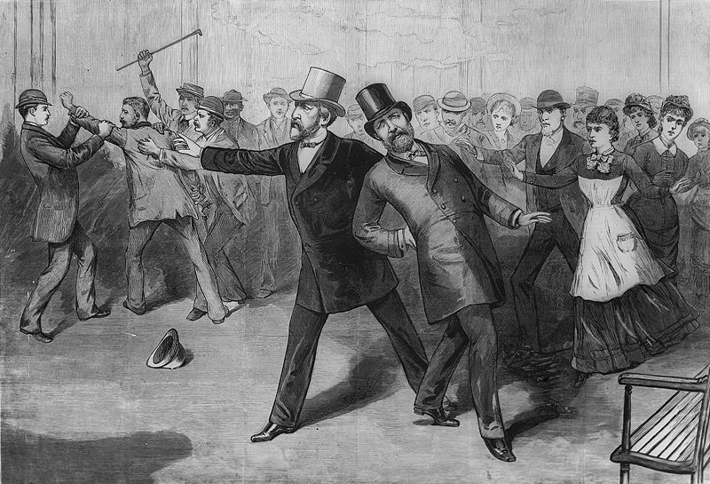
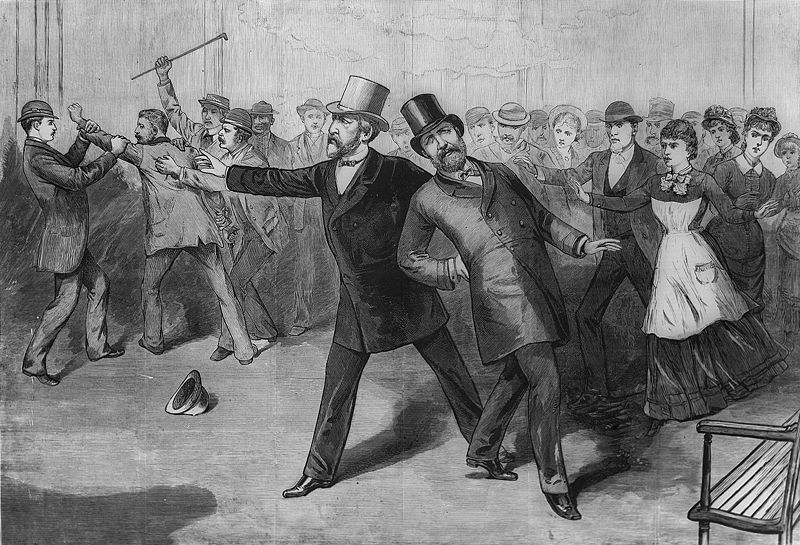

The Bureaucracy
Dr. Christopher N. Lawrence
Middle Georgia State University
POLS 1101: American Government
üîä Disable Narration
The Bureaucracy
Responsible for implementing federal government policy on a day-to-day basis.
-
The study of bureaucracy began with German sociologist Max Weber in the late 19th century.
Hierarchical organization.
Use of specialization and division of labor.
Decisionmaking guided by explicit rules.
Merit-based hiring and promotion.
Goal: neutral competence.
Hierarchy and Specialization
History of the Federal Bureaucracy
Early United States (through 1820s) — few government jobs.
-
Jacksonian era (1830s–50s) — the height of patronage and the spoils system.
Many appointees were unqualified; their main “qualification” was supporting the president's party.
Ending the Spoils System
-
Pressure for reform after the Civil War:
-

Assassination of Pres. Garfield by a disgruntled office-seeker in 1881.
-
Pendleton Act (1883) — established civil service system, gradually.
-
Hatch Act (1939) — limits political activity by civil service employees.
-

Most senior positions still political appointees.
Cabinet Departments
-
15 cabinet departments
Headed by cabinet secretaries (except attorney general, who heads Department of Justice).
Some serve a particular clientele group; e.g. Agriculture, Education, Veterans Affairs.
Most recent reorganization created the Department of Homeland Security in 2002.
Independent Agencies
Government agencies that are established outside of cabinet departments:
-
Environmental Protection Agency (EPA)
National Aeronautics and Space Administration (NASA)
Social Security Administration (SSA)
Independent Regulatory Commissions/Boards
Federal government agencies that are more independent of presidential control and are responsible for regulating particular economic activities.
Federal Communications Commission (FCC)
Securities and Exchange Commission (SEC)
National Labor Relations Board (NLRB)
Government Corporations
Around two dozen government corporations, including:
-
Corporation for National and Community Service (Americorps)
Federal Deposit Insurance Corporation (FDIC)
National Railroad Passenger Corporation (Amtrak)
Tennessee Valley Authority (TVA)
The “Shadow Bureaucracy”
Many non-federal employees work on behalf of the federal government, but don't show up in the employee counts.
State and local government employees often responsible for federal government programs
-
Outsourcing
Nonprofit organizations
Private contractors
Managing the Bureaucracy
-
Who's the boss? The challenge of accountability.
-
The president and appointed executive branch officials
-
Congress
-
Citizens
-
The Bureaucratic “Glass Ceiling”
-
Appointed officials: often are inexperienced, non-experts, particularly those in less visible positions.
-
Civil service employees: low prestige jobs; limited opportunities for advancement.
Problems of the Bureaucracy
-
Changes in internal procedures tend to be slow.
-
Expansionary tendencies.
-
Difficult to measure performance.
-
Open-ended tasks and mandates.
-
“Red tape” — emphasis on fairness and equal treatment often leads to unresponsiveness.
-
Agency cautiousness; few incentives for innovation.
Agency Capture
Government agencies often regulate in the interest of the regulated, rather than the broader public interest.
-
Formation of iron triangles.
More modern concept: issue networks involving many actors.
- Example: the Materials Management Service (MMS) and the Deepwater Horizon oil spill in 2010.
Congress and the Bureaucracy
-
Senior appointed officials require Senate confirmation.
-
Agency organization is set by law.
-
Structure and functions determined politically or ad hoc (e.g. DHS).
Law limits agency discretion.
-
Appropriations process limits agency spending.
-
Oversight by congressional committees.
Other influences
-
Judicial review of agency actions.
-
Public opinion and electoral politics.
-
Interest groups: alliances with organized interests in shared policy areas.
The Bureaucracy and the Public
Bureaucrats are required to be responsive to the public interest in a number of ways.
Use of citizen advisory councils.
Sunshine laws require policymakers to hold public meetings.
The Freedom of Information Act (FOIA).
The Privacy Act of 1974.
Implementing Policy
The breaucracy is responsible for carrying out laws and making/enforcing regulations with the force of law.
Regulatory power subject to the Administrative Procedure Act of 1946.
Proposed regulations are published in the Federal Register and subject to public comment — www.regulations.gov.
Congress can block regulations or agency decisions by withholding funding.
Also subject to judicial review.
Copyright and License
The text and narration of these slides are an original, creative work, Copyright © 2000–25 Christopher N. Lawrence. You may freely use, modify, and redistribute this slideshow under the terms of the Creative Commons Attribution-Share Alike 4.0 International license. To view a copy of this license, visit http://creativecommons.org/licenses/by-sa/4.0/ or send a letter to Creative Commons, 444 Castro Street, Suite 900, Mountain View, California, 94041, USA.
Other elements of these slides are either in the public domain (either originally or due to lapse in copyright), are U.S. government works not subject to copyright, or were licensed under the Creative Commons Attribution-Share Alike license (or a less restrictive license, the Creative Commons Attribution license) by their original creator.
Works Consulted
The following sources were consulted or used in the production of one or more of these slideshows, in addition to various primary source materials generally cited in-place or otherwise obvious from context throughout; previous editions of these works may have also been used. Any errors or omissions remain the sole responsibility of the author.
- Barbour, Christine and Gerald C. Wright. 2012. Keeping the Republic: Power and Citizenship in American Politics, Brief 4th edition. Washington: CQ Press.
- Coleman, John J., Kenneth M. Goldstein, and William G. Howell. 2012. Cause and Consequence in American Politics. New York: Longman Pearson.
- Fiorina, Morris P., Paul E. Peterson, Bertram D. Johnson, and William G. Mayer. 2011. America's New Democracy, 6th edition. New York: Longman Pearson.
- Krutz, Glen, et al. 2025. American Government, 4th edition. Houston: OpenStax College.
- O'Connor, Karen, Larry J. Sabato, and Alixandra B. Yanus. 2013. American Government: Roots and Reform, 12th edition. New York: Pearson.
- Sidlow, Edward I. and Beth Henschen. 2013. GOVT, 4th edition. New York: Cengage Learning.
- The American National Election Studies.
- Various Wikimedia projects, including the Wikimedia Commons, Wikipedia, and Wikisource.